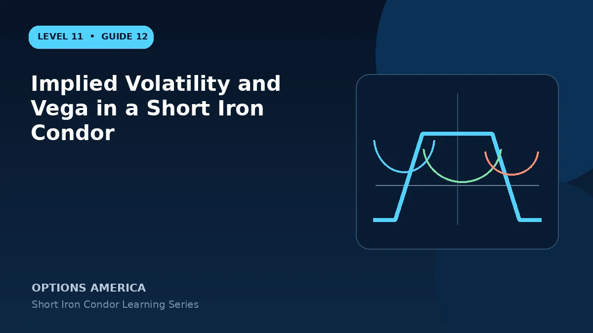

Understand how IV contraction, expansion, skew and term structure affect the four legs of a short iron condor.
Net negative vega
The short inner options often carry more combined vega than the farther long wings, leaving negative net exposure. A parallel IV decline may reduce the debit required to close.
Volatility expansion
IV often rises during fast price moves, combining vega loss with adverse delta and gamma. Long wings cap expiration loss but may not prevent a sharp interim drawdown.
Skew and surface risk
Put and call strikes can reprice differently. A downside selloff may steepen put skew, so modeling one uniform IV shift can understate put-side loss.
Event volatility
Earnings may offer rich credit and a large expected range, but the realized gap can exceed both short and long strikes. Compare the event-implied move with the complete defined loss.
A practical example
Net vega of −0.20 implies roughly a $20 loss per IV point per standard condor, all else equal. A five-point expansion suggests about −$100 before price and time effects.
This simplified example focuses on one position and a limited set of price and volatility outcomes. Live option prices also reflect the underlying price, time decay, rates, dividends, liquidity and transaction costs. Greeks are theoretical estimates, not guarantees.
Frequently asked questions
Does falling IV guarantee profit?
No. A price move can overwhelm vega gains.
Do wings remove vega?
They reduce but rarely eliminate it.
Why model skew?
Each strike may experience a different IV change.
Continue the Short Iron Condor cluster
Explore related guides: How to Adjust a Short Iron Condor · How to Build a Short Iron Condor · IV Rank and IV Percentile for Short Iron Condors. For a structured sequence, use the free Level 11 – Short Iron Condor course.
Options involve risk and are not suitable for every investor. This material is educational and is not investment, tax or legal advice. Greeks are theoretical estimates, and contract terms and broker requirements can vary.